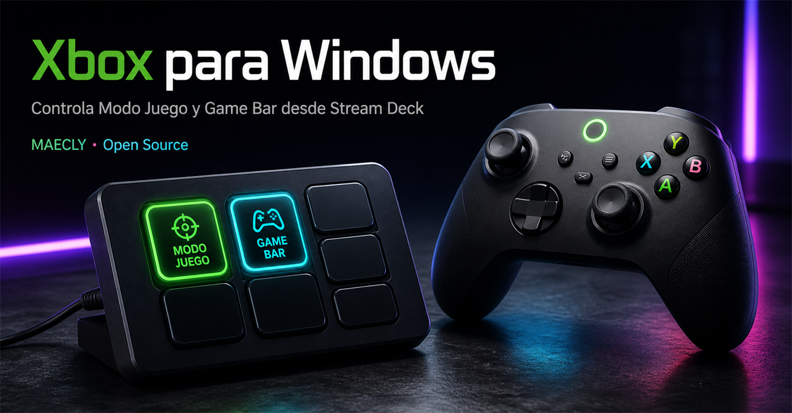

01
01Alternar Modo Juego
Enciende o apaga AutoGameModeEnabled y confirma que Windows guardó el cambio.
Controla Modo Juego y decide si el botón Xbox del mando abre Game Bar, directamente desde tu Stream Deck.
Pulsa una tecla para probar
Dos controles claros, estado real sincronizado y la respuesta visual que esperas en cada tecla.
01Enciende o apaga AutoGameModeEnabled y confirma que Windows guardó el cambio.
 02
02Decide si el botón central Xbox puede abrir Game Bar sin navegar por Configuración.
Preferencia del usuario actualSi cambias la opción desde Configuración, el Stream Deck vuelve a leerla y actualiza la tecla.
Registro de éxito y erroresIconos rediseñados con alto contraste para seguir siendo legibles incluso en la pantalla compacta de una tecla.

Obtén el archivo .streamDeckPlugin desde GitHub Releases.
Ábrelo con doble clic y acepta la instalación en Stream Deck.
Busca “Xbox para Windows” y arrastra ambas acciones a tu perfil.
La descarga se obtiene desde la Release oficial de GitHub.
TypeScript para la integración con Stream Deck y un notificador C# mínimo para que Configuración de Windows refleje Modo Juego al instante.
Explorar el repositorio$ npm run validate
✓ TypeScript typecheck
✓ Unit + integration tests
✓ Stream Deck manifest
✓ Windows notifier build
license MIT
author MAECLY
runtime Node.js 24No. Las dos preferencias viven en HKCU, el Registro del usuario actual.
Windows 11 y Stream Deck 7.1 o posterior. Node.js solo es necesario para desarrollar o empaquetar.
Cada Release se construye con GitHub Actions, incluye checksum SHA-256 y publica el mismo código que puedes auditar.
Sí. Está bajo licencia MIT y acepta mejoras, pruebas, traducciones e issues en GitHub.